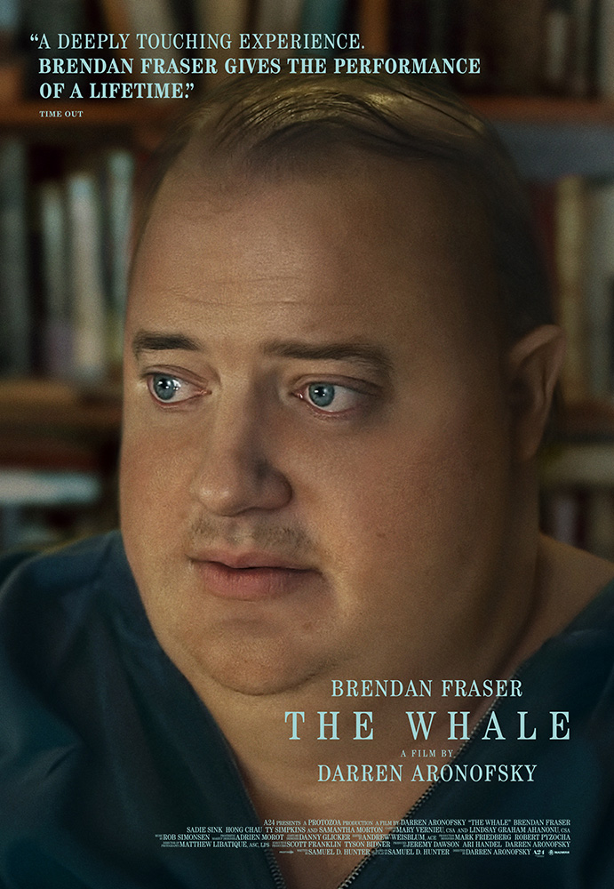

Peliculas del mes

The Whale
Argentina 1985

Pinocho
Top Gun

Si nunca leiste una crítica, este es el momento

Un lugar para entrar al cine ya sabiendo un poco de qué trata "la cosa".

Cada mes expertos publican lo mejor del cine en formato video
Disponible en Amazon prime, Apple tv, Flow Claro Video, Google play peliculas.
Una película que marcara un antes y un después en la historia del cine moderno, siendo revolucionara en el genero de fantasía con el tema del Multiverso, demostrando que se puede hacer una historia simple pero bien echa sobre ese tema.
Primero que nada hay que felicitar a los especialistas de efectos especiales, quienes demostraron una vez mas que tener demasiado dinero no es excusa para hacer algo maravilloso, y que un simple aprendiz puede hacer algo extraordinario si de verdad le da empeño a lo que hace.
No es una película para todo el mundo, y no busca agradarle a todos, lo que la hace muy especial debido a que es una combinación entre comedia, acción, drama, ciencia ficción y fantasía, algo similar a lo ocurrido con Parasite pero llevado a un nivel mas fantasioso.
Lo mejor de esta película es que ningún personaje esta desperdiciado y todos aprenden una lección importante conforme avanza la trama, también mencionar las sorpresas que te vas a encontrar porque es totalmente impredecible, tal cual como ocurrió con Matrix en su tiempo, esta película lo logra al máximo.
Disponible en Amazon Prime Video, HBO Max, Disney Plus, Netflix
Todos, en mayor o en menor grado, formamos parte de la vida de los demás y creamos juntos una historia en común en donde cada quién es un personajes, cada personaje a su vez se construye, toma sus decisiones y aporta en base a sus creencias, impulsos, cultura, entorno, eventos importantes de su vidas, la parte biológica, económica, entre otras muchas variables sin ser consciente de ello.
En esta película cada uno de los personajes se encuentra afectado por como se han dado las cosas entre ellos a grado tal que no pueden, ni quieren ver hacia adentro, por lo que les es más fácil somatizar, destruirse, odiar, asumir o huir.
Pero nuestro protagonista, que es maestro de literatura, sabe que la historia que han escrito en conjunto es desoladora, que puede, y es lo más probable, que acabe mal, a su vez, intuye que queda algo de esperanza y ahí es donde surge el ensayo de Ellie, ese ensayo que esclarece con brutal honestidad la tristeza y resentimiento de la chica lo que origina su odio y su crueldad. Es a través de este escrito que Charlie conoce íntimamente a su hija, sus palabras la delatan, sabe que ella tiene una esencia buena, y que son las circunstancias a las que ha sido expuesta las que la han llevado a actuar así.
Al final me resulta muy conmovedora la sonrisa que se dedican padre e hija, ambos saben que ese ensayo es la prueba de que ella es buena persona.
Disponible en: Amazon Prime Video.
Hagamos de cuenta que esta historia es un guion original, veámosla como una película más, hagamos de cuenta que argentina es un país ficticio, bueno en ese caso nos encontramos con una gran y conmovedora historia muy bien contada y excelentemente hecha tanto en guion, dirección, actuaciones y música, Por que la verdad es que mucha gente critica esta película solo por que la comparan con la vida real y a esas personas les pregunto¿ que importa? Realmente hay que criticar una película por no coincidir con la historia? Por que así otras grandes películas como gladiador, 300, indiana Jones, rescatando el soldado Ryan, Titanic entre otras películas deberían ser considerados bodrios absolutos.
En conclusión Argentina 1985 es una excelente película que merece ser vista por todo el mundo sin importar que si fuese fiel o no a la historia real.
Disponible en Netflix.
Esta libre adaptación de Guillermo Del Toro usa una formula similar a la versión animada de Disney, pero tomando elementos del cuento original con algunos guiños. La historia recuerda un poco a El Espinazo Del Diablo y El Laberinto Del Fauno por transcurrir después de la primera guerra mundial durante el surgimiento del fascismo. Del Toro usa la formula de esas dos películas ofreciendo una trama fantástica con un aire metafórico y filosofico sobre todo por la creación de Pinocho que es como la resurrección del hijo de Gepetto. El Pinocho de esta versión se asemeja al del cuento en cuanto personalidad ya que se muestra testarudo e ingenuo, pero que a lo largo va aprendiendo lo que es ser un buen hijo. La animación se lleva todo el crédito por su calidad artesanal y ser visualmente muy vanguardista ya que el estilo de Del Toro se le nota bastante. Esta película es otra gran prueba de que la animación no es solamente material infantil, la animación en realidad es arte y un artista tiene toda la libertad de realizar su arte como le plazca. Esta película es una obra de arte animada con una bella historia sobre la vida, la muerte, la juventud y la familia.
Disponible en: Star Plus, Paramount+, Flow, Claro Video, Apple tv, Google play peliculas.
Espectacular. Éste es el adjetivo que mejor resume Top Gun: Maverick, la secuela del clásico popular de 1986.
Top Gun Maverick es una secuela que tiene todo el sentido del mundo incluso casi 40 años después. Con escenas que son clarísimos homenajes a la película de los 80, y a pesar de tener grandes actores, sin ninguna duda la estrella (ya desde el título) es Tom Cruise, si hay otra estrella en esta película que puede eclipsar a Cruise/Maverick es la forma de rodar la acción. Todas las escenas de los aviones en vuelo, las confrontaciones y competiciones aéreas son simplemente espectaculares. Los vuelos rasantes, las acrobacias y la velocidad están fantásticamente rodadas.
Disponible en Netflix.
Espectacular. Éste es el adjetivo que mejor resume a Sin Novedad en el Frente, la secuela del clásico popular de 1986.
El film es desde entrada, magistral. Una versión alemana de la gran obra antibélica del escritor del mismo origen Erich María Remarke. El idealismo romántico de un grupo de jóvenes de corta edad, los lleva a enlistarse en 1917, queriendo ser patriotas en el tercer año de la guerra. Desde la mirada de Paul y sus amigos, salta la verdad: la supervivencia en un entorno difícil (la vida en las trincheras) donde el hambre, las pestes y el frío, sumado a los bombardeos, los va despojando de confianza y ánimo ante una realidad inesperada como devastadora. Excelentemente filmada ( hay escenas de una sola toma, "el plano secuencia" que son fabulosas), importantes efectos especiales, los diseños de producción, sonido y muy bien fotografiada. Gran actuación del protagonista principal (Paul es el actor Felix Kammerer), y del elenco en general. La película no sólo muestra el descarne de las batallas, sino la lucha a nivel diplomático por parte de un ministro para terminar con el terrible desastre que afecta a los jóvenes y hombres de Alemania, y la comodidad de aquellos que sin estar en el terreno de lucha, busca sacrificarlos por la Patria., y aquí se ajusta perfectamente la frase de un aviador ....“La guerra es un lugar donde jóvenes que no se conocen y no se odian se matan entre sí, por la decisión de viejos que se conocen y se odian, pero no se matan”. (Erich Hartman)